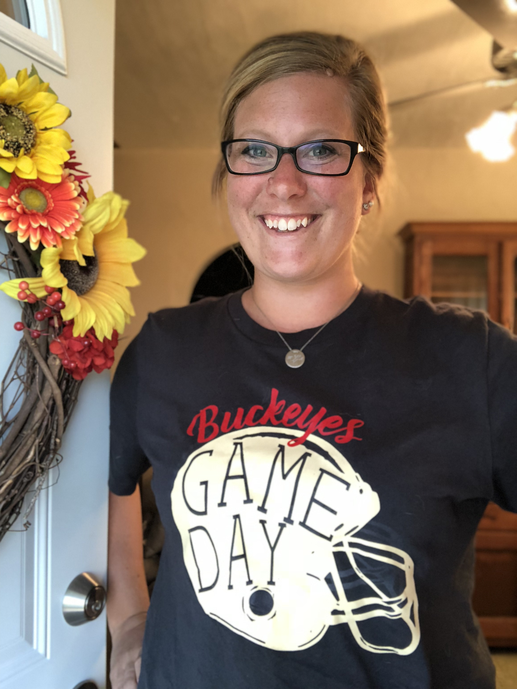

Pigs & Prints is named after the hobbies of my husband and myself. We call home to several acres of land that belong to the family farm. My husband's hobby is breeding, raising, and selling show pigs. My hobby is all things crafting. At any point of our day, you can find one of us in the barn and the other creatively working indoors. This became the figure-head for Pigs & Prints, creatively designed graphic tees where you may regularly find inspiration from the farm, the barn, and all things small-town.
~Katey